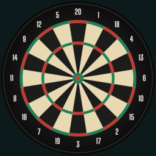

Darts-Karriere vom Kneipenturnier bis ins WM-Finale.
A darts career from the pub to the world final.
Zielen. Zittern. Treffen.
Halte den Finger auf die Scheibe und ziele – aber die Hand zittert, und beim Matchdart noch mehr. Lass los im richtigen Moment und wirf deine Pfeile ins Triple 20.
- Karriere in fünf Stufen: von der Kneipe über Liga und Qualifikation bis ins WM-Finale.
- 501 und 301 mit Double Out, Checkout-Hinweise wie im Fernsehen, ein Ansager für jede Aufnahme.
- Jeden Tag eine neue Checkout-Aufgabe, für alle gleich.
In 14 Sprachen, ohne Konto, läuft auch offline. Alle Gegner und Turniere sind erfunden.
Kostenlos mit Werbung, einmaliger Kauf „Werbefrei“. Für Spielerinnen und Spieler ab 13 Jahren. Mit Unterstützung von KI entwickelt (Code, Texte, Übersetzungen, Grafiken).
Aim. Shake. Hit.
Hold your finger on the board to aim – but your hand shakes, and even more on a match dart. Let go at the right moment and send your darts into the treble 20.
- A career in five stages: from the pub through league and qualifier to the world final.
- 501 and 301 with double out, TV-style checkout hints and a caller for every visit.
- A new checkout challenge every day, the same for everyone.
In 14 languages, no account, works offline. All opponents and tournaments are fictional.
Free with ads, one-time “Ad-free” purchase. For players aged 13 and up. Developed with the help of AI (code, text, translations, graphics).